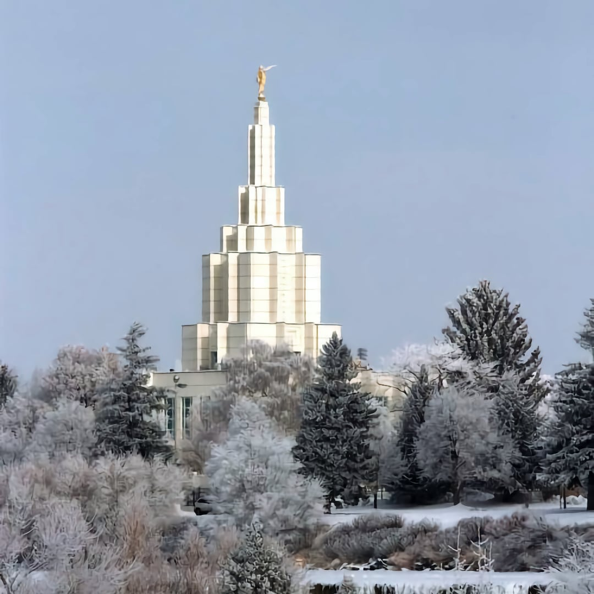
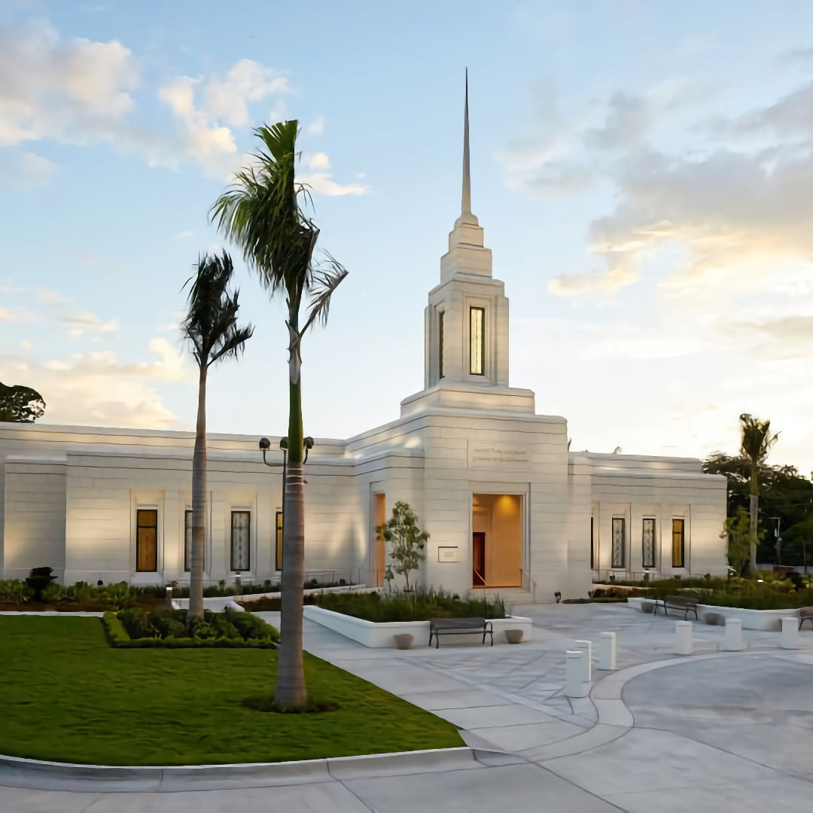

Why Temples?
“One of the things temple worship does for us, and to us, is keep an
eternal perspective in the front of our minds…Such perspective can
bring light and hope, even in dismal circumstances, and can make
pleasant living conditions all the more wonderful”
-Andrew C. Skinner
"A Place of Instruction"
Many people wonder why the Latter-day Saints build temples. While beautiful on the inside and out, what actually happens inside them can be shrouded in mystery. One primary purpose of the Temple is to be “a place of instruction for al those who are called the work of the ministry … that they may be perfected in [their] understanding … in all things pertaining to the kingdom of God on the earth” (D&C 97:13-14).
Redemption of the Dead
Elder W. Grant Bengerter taught, “Temple work is for the redemption of the dead. The scriptures and doctrine, however, refer more specifically to a particular group of the dead. Malachi spoke about “binding” fathers to children and children to fathers (Mal. 4:6). Joseph Smith emphasized temple blessings for our kindred dead, our dead. The emphasis is on the family.” Ultimately the emphasis of the whole Gospel is on the family, and staying together as a family. It is the temple ordinances that enable the ideal of a “forever family” to become reality. The goal is in essence to create a great family tree, “binding” each of us to our brothers and sisters around the globe.
Final Thoughts
That the Lord instructs us to build temples in this day is a sign of His great and everlasting love for us. President George Albert Smith said, “Each of [the temples] has been built to one great eternal purpose: to serve as a House of the Lord, to provide a place sacred and suitable for the performing of holy ordinances that bind on earth as in heaven—ordinances for the dead and for the living that assure those who receive them and who are faithful to their covenants, the possession and association of their families, worlds without end, and exaltation with them in the celestial kingdom of our Father”